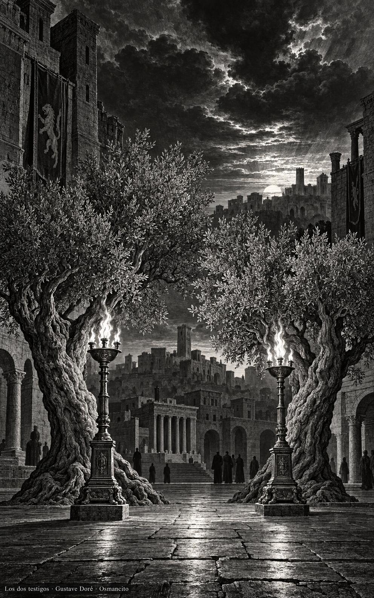
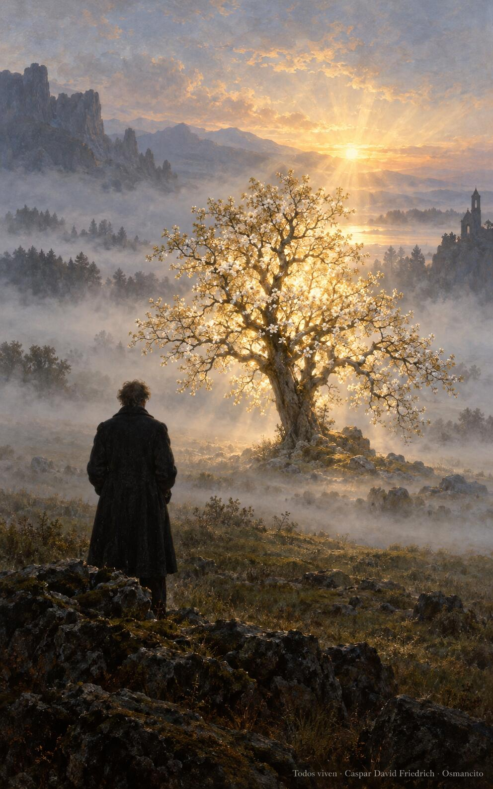
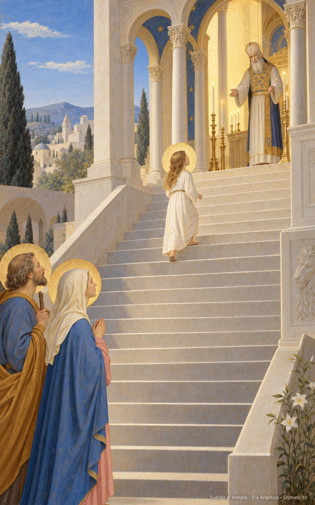

21 de noviembre de 2026
¡Buenos días!
Dios de vivos
42
Dios no es Dios de muertos, sino de vivos.
Lucas 20,38. Fuente
Que seamos testigos de pie ante el Señor, olivos que no se rinden aunque la plaza quede tendida. Que la muerte no nos cierre la boca: que creamos que el que llama a Abraham, Isaac y Jacob no es Dios de muertos sino de vivos, y que para él todos vivamos. Que él sea nuestra roca y nuestro escondite, y que, juzgados dignos, resucitemos a la vida que no se acaba, hijos suyos para siempre.

- Los dos olivos y los dos candelabros siguen de pie en la plaza de la gran ciudad cuando cae la tarde: Apocalipsis 11, los testigos que no se rinden.

- El árbol desnudo se enciende en flor bajo la niebla mientras una figura lo contempla en silencio: Lucas 20, para Dios todos viven.
¡Feliz sábado 21 de noviembre!
😊🙋♂
La Presentación de la Bienaventurada Virgen María
Que como María subamos los escalones del templo con la vida en las manos, niña entregada que se vuelva morada. Que Dios venga a vivir en medio de nosotros y nos tome como propiedad suya en tierra santa. Que el alma glorifique al Señor y el espíritu se llene de júbilo, porque mira la humildad de su esclava. Que escuchemos la palabra y la pongamos en práctica, y seamos su madre, su hermana, su familia.

- La niña sube sola los escalones del templo hacia la luz de las velas que la esperan: la Presentación de María, la vida entregada que se vuelve morada.
¡Feliz memoria de la Presentación de la Bienaventurada Virgen María!
😊🙋♂
© 2026 Osmancito